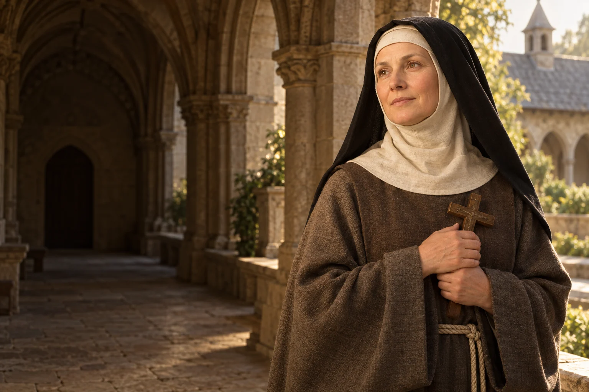

Troska o miejsce
Zobacz, jaka inicjatywa w Twojej okolicy wspiera osoby potrzebujące i jak możesz pomóc.

1234–1292
Obchód liturgiczny: 24 lipca
Księżna i klaryska związana ze Starym Sączem.
Kinga połączyła życie księżnej z troską o mieszkańców i późniejszym życiem we wspólnocie klarysek w Starym Sączu.
Poznaj historię jej życia →Różne etapy życia mogą stać się drogami służby ludziom i budowania wspólnoty.
Refleksja redakcji W Modlitwie.Kinga przychodzi na świat na Węgrzech.
Jako dziecko trafia do kraju przyszłego męża.
Po śmierci męża związuje dalsze życie ze Starym Sączem.
Rozpoczyna nowicjat i składa profesję wśród klarysek.
Umiera 24 lipca w Starym Sączu.
Jan Paweł II ogłasza Kingę świętą.
 Współczesne wyobrażenie artystyczne.
Współczesne wyobrażenie artystyczne.Około 3 min czytania · 5 rozdziałów
Kinga, zwana także Kunegundą, urodziła się w 1234 roku jako córka węgierskiego króla Beli IV. W dzieciństwie przybyła do Polski, gdzie miała zostać żoną Bolesława, księcia sandomierskiego, później także krakowskiego. Dorastała w środowisku piastowskiego dworu. Małżeństwa dynastyczne łączyły wtedy rodziny i kraje, a wychowanie młodej księżniczki obejmowało odnalezienie się w nowej wspólnocie.
Wyjazd w tak młodym wieku oznaczał oddalenie od domu i dorastanie w nowym języku oraz otoczeniu. Jej późniejsza historia rozgrywa się więc pomiędzy węgierskim pochodzeniem a polską wspólnotą, z którą związała całe dorosłe życie.
Kinga i Bolesław, zwany Wstydliwym, żyli w czasach rozbicia dzielnicowego i najazdów. Tradycja kościelna przekazuje, że zdecydowali się zachować w małżeństwie czystość. Nie była ona jedynie postacią pozostającą na uboczu: źródła mówią o jej udziale w sprawach księstwa, wspieraniu fundacji i pomocy ludziom dotkniętym wojną. W tym obrazie władza łączy się z odpowiedzialnością za innych.
Opowieść o małżeństwie Kingi i Bolesława jest zakorzeniona w dawnych żywotach i tradycji religijnej. Warto odczytywać ją w kontekście XIII wieku, nie przenosząc bezpośrednio dawnych oczekiwań na decyzje współczesnych małżeństw.
Wspomnienie Kingi obejmuje jej zaangażowanie w życie Kościoła i lokalnych wspólnot. Jan Paweł II przypomniał podczas kanonizacji jej troskę o kraj w okresie niepokojów. Z jej imieniem związano także dzieje soli w Wieliczce i Bochni. Opowieść o pierścieniu wrzuconym do kopalni należy jednak do legendy: nie trzeba traktować jej jako udokumentowanego wydarzenia, aby dostrzec historyczne związki księżnej z regionem.
Jej działalność przypomina, że życie na dworze nie polegało wyłącznie na reprezentacji. Fundacje, decyzje gospodarcze i opieka nad ludźmi miały znaczenie dla miejsca, w którym żyła. Współczesny obraz Kingi powstaje z dokumentów oraz późniejszych świadectw.
Po śmierci Bolesława w 1279 roku Kinga związała się ze Starym Sączem. Wspierała klasztor klarysek i z czasem weszła do tej wspólnoty. Watykański dekret wskazuje rok 1288 jako początek nowicjatu i następny jako rok profesji. Ostatnie lata spędziła w klasztorze. Zmiana nie oznaczała odrzucenia wcześniejszego życia, lecz nową formę oddania się modlitwie i wspólnocie.
Klasztor stał się miejscem, gdzie księżna mogła żyć we wspólnocie kierującej się regułą św. Klary. Codzienna modlitwa, rytm zajęć i więź z siostrami nadawały nowy kształt jej dalszej drodze po utracie męża.
Kinga zmarła 24 lipca 1292 roku. Jej pamięć trwała przede wszystkim w Starym Sączu, a kult rozwijał się przez kolejne stulecia. Został zatwierdzony w 1690 roku. Jan Paweł II kanonizował ją podczas pielgrzymki do Polski w 1999 roku. Dla współczesnego czytelnika jej historia może stać się okazją do namysłu nad troską o wspólnotę, odpowiedzialnością za powierzone zadania i wyborem życia zakonnego.
Dzisiejsza pamięć o Kindze łączy wątki historyczne i religijne z lokalną tożsamością Sądecczyzny. Jej przykład nie wymaga idealizowania realiów epoki: można w nim zobaczyć pytanie, jak korzystać z wpływu i możliwości dla dobra innych.
W jej życiorysie spotykają się sprawy polityczne, relacje rodzinne i decyzja o życiu zakonnym. Każdy z tych etapów miał własne obowiązki oraz ograniczenia wynikające z czasu, w którym żyła.
Zobacz, jaka inicjatywa w Twojej okolicy wspiera osoby potrzebujące i jak możesz pomóc.

Wybierz jedną decyzję, w której możesz uwzględnić dobro całej wspólnoty.

Przyjrzyj się zmianie w swoim życiu i nazwij to, co chcesz w niej zachować.
Ojcze nasz, któryś jest w niebie, święć się imię Twoje; przyjdź królestwo Twoje; bądź wola Twoja jako w niebie, tak i na ziemi. Chleba naszego powszedniego daj nam dzisiaj; i odpuść nam nasze winy, jako i my odpuszczamy naszym winowajcom; i nie wódź nas na pokuszenie, ale nas zbaw ode złego. Amen.
Tradycyjny tekst modlitwy; utrwalony polski wariant.Ojcze nasz →